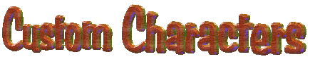
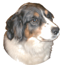
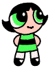

 |
Or maybe your girlfriend's, or your pet's.
Maybe your child made a cute drawing of a character in school.
Have a picture of that new baby?
All of these can be made into animated, talking characters for CyberBuddy.
Check out CyberBuddy Agent Magic! |
Want to see what I mean?
| Download the character at the right. (Click on the Image) Place the file (sampson.acs) in your agent directory. This is normally c:\windows\msagent\chars\ or (for NT) c:\winnt\msagent\chars\ Then select Sampson for one of your characters in CyberBuddy. Sampson is an example of an Agent character made from a single photograph. He can speak to you and has a few simple animations along with sound effects. |  |
| Buttercup is an example of a character made from a drawing. She has a number of animations. You can download her on the "More Characters" page. |  |
| What does it cost?
A simple, single photo character with just speaking animation is $25. A character with speaking animation plus 3 gesture animations and appropriate sound effects is $35 Each additional animation (with sound effect if appropriate) is $7.50. |
Follow this link to get your character.